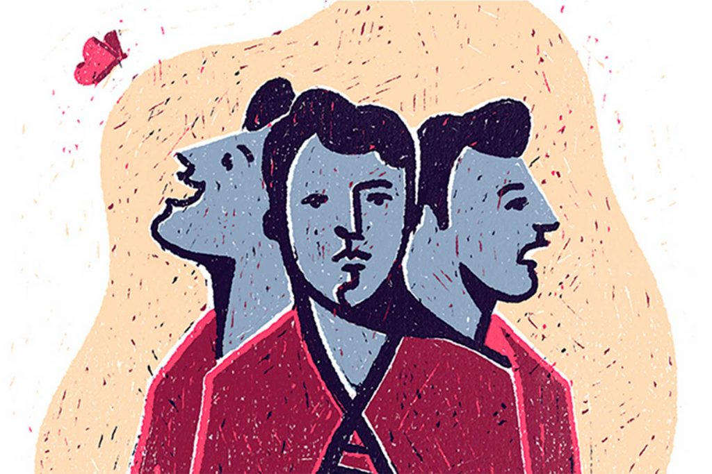

O Transtorno de Personalidade Borderline, também conhecido como Transtorno de Personalidade Limítrofe, é uma condição psiquiátrica complexa e de difícil diagnóstico, caracterizada por uma instabilidade intensa nos relacionamentos interpessoais, na autoimagem, nos sentimentos e no comportamento. O termo "borderline" surgiu originalmente para descrever pacientes que estavam na fronteira entre a neurose e a psicose, mas hoje sabemos que o transtorno é distinto, com critérios próprios. Ele não representa uma "loucura", como o senso comum erroneamente acredita, mas sim um padrão profundo de funcionamento emocional desregulado. Pessoas com TPB geralmente têm uma sensibilidade emocional extrema. Sentem tudo com muita intensidade — amor, raiva, tristeza, medo — e suas reações podem parecer desproporcionais aos olhos de quem não compreende o transtorno. Um pequeno gesto de rejeição ou afastamento, por exemplo, pode desencadear uma crise de desespero, sentimentos de abandono ou comportamentos impulsivos. Essa instabilidade emocional constante gera um sofrimento profundo e contínuo. Muitas pessoas com transtorno borderline têm histórico de traumas na infância, como abuso físico, emocional ou sexual, negligência ou abandono. Embora nem todos os casos tenham essa origem, os estudos apontam que fatores ambientais, combinados a predisposições genéticas e neurobiológicas, estão ligados ao desenvolvimento do transtorno. O cérebro de quem tem TPB apresenta alterações em áreas ligadas à regulação emocional e ao controle de impulsos, como a amígdala e o córtex pré-frontal. O diagnóstico é clínico, feito por profissionais da saúde mental a partir da observação de um padrão persistente de comportamento e sofrimento emocional. É comum o TPB ser confundido com transtorno bipolar, depressão, ansiedade ou transtorno obsessivo-compulsivo, o que pode atrasar o tratamento correto. O transtorno borderline costuma surgir no fim da adolescência ou início da vida adulta e pode durar anos se não for tratado.
Os sintomas do transtorno borderline são variados, mas giram em torno da instabilidade emocional, do medo intenso de abandono, da impulsividade e da dificuldade de manter relacionamentos estáveis. As emoções mudam rapidamente e de forma extrema: uma pessoa pode amar intensamente alguém pela manhã e, à tarde, sentir raiva ou ódio profundo pelo mesmo indivíduo por um motivo mínimo. Esse padrão é conhecido como idealização e desvalorização. Há também uma autoimagem instável — o indivíduo não sabe quem é, o que quer ou como se vê. Frequentemente se sente vazio, como se nada fizesse sentido. Além disso, a impulsividade pode levar a comportamentos prejudiciais, como gastos excessivos, abuso de substâncias, sexo de risco, compulsão alimentar ou automutilação (como cortes na pele). As tentativas de suicídio são, infelizmente, comuns, especialmente quando a pessoa se sente rejeitada ou sozinha. Outros sintomas incluem explosões de raiva, descontrole emocional, crises de ciúme, paranoia transitória em momentos de estresse extremo e sentimentos crônicos de vazio. Pessoas com TPB muitas vezes vivem em constante conflito com os outros e consigo mesmas, oscilando entre a necessidade intensa de proximidade e o medo de serem machucadas por aqueles de quem gostam.
Lidar com o transtorno borderline é um processo contínuo, que exige comprometimento, paciência e tratamento especializado. A principal forma de tratamento é a psicoterapia, sendo a Terapia Comportamental Dialética (DBT) uma das mais eficazes. Desenvolvida especificamente para o TPB, essa abordagem ajuda os pacientes a regularem as emoções, tolerarem o sofrimento, melhorarem os relacionamentos e desenvolverem habilidades sociais e de enfrentamento. A terapia cognitivo-comportamental (TCC) também pode ser útil, principalmente para trabalhar pensamentos distorcidos e crenças negativas sobre si e os outros. A psicanálise e outras abordagens psicodinâmicas ajudam a compreender os conflitos inconscientes e padrões repetitivos de comportamento. Em alguns casos, medicamentos são utilizados para aliviar sintomas associados, como depressão, ansiedade, impulsividade ou irritabilidade. Antidepressivos, estabilizadores de humor e antipsicóticos em baixas doses podem ser prescritos, sempre com acompanhamento psiquiátrico. É importante ressaltar que não existe um "remédio para borderline" — os medicamentos apenas auxiliam, mas não substituem a terapia. No dia a dia, é essencial desenvolver estratégias de autocuidado: manter uma rotina estável, praticar exercícios físicos, buscar atividades que tragam prazer e desenvolver consciência emocional por meio de técnicas como mindfulness (atenção plena). Aprender a identificar os gatilhos emocionais, dar um tempo antes de reagir e praticar habilidades de regulação emocional são ferramentas centrais. O apoio da família e dos amigos também é crucial. Entender o transtorno, não julgar os comportamentos impulsivos e oferecer uma presença estável ajudam a pessoa com TPB a se sentir menos sozinha e mais segura. Grupos de apoio podem ser importantes para compartilhar experiências e aprender com outros que enfrentam os mesmos desafios.